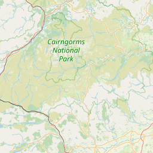
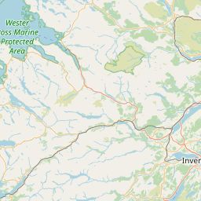
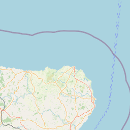
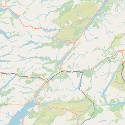
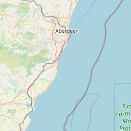
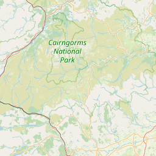
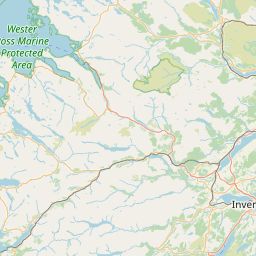
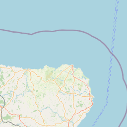
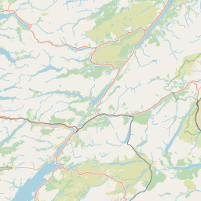
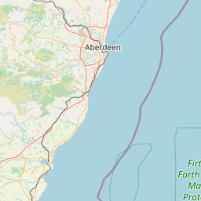

2つの四角内をクリックして、それぞれの好みの位置を選択してください
Japanese Whisky
閉鎖された軽井沢蒸溜所からの希少な逸品。25年熟成されたこの表現は、日本の繊細さと果実の豊かさのバランスが見事。深い複雑さと長く続く余韻が特徴。
Single Malt Scotch Whisky - Speyside
有名な独立系ボトラー、サマローリによってボトリングされた希少なマッカラン1990年。豊かなシェリーの影響があり、ドライフルーツ、オレンジピール、クリスマスケーキの風味が特徴。複雑な樽のスパイスが蜂蜜、トフィー、ダークチョコレートと調和しています。
Single Malt Scotch Whisky
ボウモア蒸溜所の美しく熟成された表現で、ダンカンテイラー社によってボトリング。アイラ島のスモーキーさと長期熟成による果実味の発達のバランスが絶妙。
ウィスキーの銘柄をクリックすると、あなたの好みと重ねて表示されます
 
